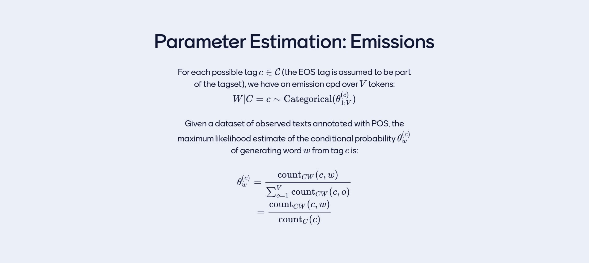

1 Representing and estimating Categorical distributions: the logistic case
W is condition on the Random variable H, which can be a history
f = is a function of the history \(h\) and has some parameters \(\theta\)
f is not a real value but a collection of probability valuesW = word
It can take on \(V\) categories, so W can take on \(V\) possible assignmentsV = vocabulary size
H = history h the history can take as many values as possible i.e (BOS, a), (BOS, an), (BOS, some)
If you take a single row then all these values would add up to 1
A Tabular representation is table look up operation. The yellow row represents then one \(\textbf{f}=\theta_{row=h}^{col=1...V}\)
Then we need to think the function
\[ \textbf{f}(h; \theta) \]
as a mechanism to predict vectors from the conditional information
2 Logistic Representation of Categorical CPDs
CPDs= Conditional Probability Distribution
What we are predicting with this Categorical distribution is the probabilities per each W under the condition of an \(h\) so on a row. Essentially we are predicting every single entry in the tabular representation. I am interest then to map these to
after each conditional information has been mapped to a point, I will map those points to a different space. I want a vecgor with \(V\) probabilities in it, one per each possible outcomes of the random variable \(W\).
Here we have \(\phi\)(small,birs) \(\in \mathbb{R}^{2}\) so in 2D that means I need my \(W_1\) also to be in 2D so when I multiply with \(\phi\)(small,birs), I get an scalar value. \(b_1\) is just an scalar.
These last row \(\textbf{S}\) is called vector of ‘Logits’ these can be large or negative to turn this into a vector inside the probability simplex we can use Softmax. Note we go from the dimensional space to logits throught a lienar model. And then from logits to probabilities with a Softmax function
The \(n\)-dimensional probability simplex, denoted as \(\Delta^n\), is defined as:
\[ \Delta^n = \left\{ (p_1, p_2, \ldots, p_n) \mid p_i \geq 0, \sum_{i=1}^n p_i = 1 \right\} \]
Here, \(p_i\) represents the probability of event \(i\), and the conditions \(p_i \geq 0\) and \(\sum_{i=1}^n p_i = 1\) ensure that the vector lies within the simplex.
The model can turn the h into a vector of \(V\) probabilities. so the \(\textbf{f}_1(h,\theta), \textbf{f}_2(h,\theta)...\)
2.1 Why is this a great idea?
The model size is a function of how many \(w\)s we have. So the model is very compact, because it does not depend on how many instances of h, because we have this basis function \(\phi\) that maps it to the proper dimensions so that we can multiply it with \(W^T\)
Histories are conditional information are no longer treated as unrelated to one another, now in fact are related to each other trhough their features. Because of these relatedness linear models work, because they find patterns that we can code in a tabular reprsentation
- Suppose you condition on a sentence to draw a prob of a label/class.
- Imagine you have 5 labels/classes, the thing that you condition can be represented by a feature function that gives you D-dimensional features so we are talking about \(\phi(h) \in \mathbb{R}^D\). For each of those dimensions you would weight them towards a class, for instance if you have \(K\)-classes, so \(KD\). Note \(K=V\)
- Each feature gets a relevance an importance score towards a class and each class get a bias \(b\). You can think of \(b\) of how usefull this class is, or how generally present it is in the data regardless of context.
- So per feature, per class you have a real number \(KD\) + \(K\) (from the bias) for each of the possible classes in my hypothetical example
3 Estimation example
How do we estimate the W_s and the b_s
- We get data as pair, where we have \(h_n\) as a conditional variable & \(w_n\) an assigment of the outcome variable
- Our model would be log-linear it will map from the history through a feature function it will map histories to a vector of probability values of the correct dimensionality
- \(s\) = W\(\theta\) + b is called the parametric function. Through this \(s\) our model predicts from any history h a complete categorical mass function with \(V\) values
To learn the parameters we initialize it, and then we compute the log likelihood of the parameters \(\theta\) give our data \(D\). This can be solve due to the idd assumption.
When we solve for the grad wrt. \(\theta\) we do not get a closed-form solution like we get in the tabular representation. Thus we use an iterative procedure aka SGD.
Matmul is the same as doing dot product but for matrices take a look at this link
Example:4 Start of Lecture

5 Why do we want to classify words in classes/categories
Reduce the number of dimensions like in bigrams only consider the nouns and adjectives and that is to measure the sentiment of a review. So here we refer to feature as the \(\phi(h)\) so if we reduce this feature vector say \(D\) to a less than \(D\) i.e in bigrams \(D=2\) then we save memory and reduce the dimensions

In out tabular CPDs we are force to treat each words as if they are unrelated to each other, but that is not trueth because as we sa before we can have relatedness i.e adjectives preceed nouns.
So to capture relatedness the categorization of words can capture that.
- For example how to classify them:
Once we have categorized we can even not use the words because we know already its categories and we know that we this categorization a sentences would be like noun + adjective, so then we dont need the actual word but rather just its category.
- Called the above a mapping. Note this could not be good enough in some instances. A reason why to do this is so that we reduce the dimensionality space.
Here an example of how people classify unambiguously
6 How to annotate words with Part Of Speech (POS) using Peen Style

Recall we model text as a join distribution over all available tokens
Now we model POS_tagged text: joint distribution over text and their POS tags
- Our goal is to assigned probabilities to the sequence paits \((w_{1:l}, c_{1:l})\)
- Recall
W Words is a random variable for us, are tokens in Caligraphic_W (a vocabulary of symbols) that I know. The size of the vocabulary is V
w is an specific word
C is for Category and is a random variable, that are in Caligraphic_C (the tagset). The size of the tagset is K
c is an specific tag
X is a random sequence (our token sequence from lst week), from words from one until the lenght L in order
\(w_{1:l}\) is a sequence of l words from the Caligraphic_W w/ vocabulary size V
Y is a random sequence
\(c_{1:l}\) is a sequence of l tags from the Caligraphic_C w/ tagset size K
Now we want a distribution over the cross product of all Text and all Tags sequence: \(w_{1:l}, c_{1:l}\). This is an enormous space

You can do two things with this:
For instance, I give you the ‘little cat’ and you want to know what is the prob sequence under the model. You can compute the possible probability sequence given that you give me a certain token sequence and then I could look for what maximizes this probability
Another we can do a language model, a language model was a mechanism to assign probabilities to strings without any tags, BUT if you get a distribution over two variables, token sequences and class sequences and you marginalized out one of the variables. ie you marginalized my choice for the first class, for the second class, all the way to the last class. If I sum the probabilities of all possible tag sequences that pair with these word sequence then I get a marginal probability. So in the above equation, the left part:
So that is the probability of a sentence so \(P_X(w_{1:l})\) this is a language model.
So once you design a model that can assign join probabilities to labeled sequences of words then you can use it to either:
- tag news sequences of words with their respective categories or
- assign prob to a sequence of words, regardless of which classes they have been annotated
Remember NB classifier you can do:
- you can annotate what is the most probable class of a document
- assign prob to a document regardless of their class (is the denominator of the NB model). Note the den of Bayes rule is the marginal
This second step is common to all generative model. Every time you have
C1..C3 is the class tha sits at position 1..3
Last time we created a distribution and we created a new one, by chopping out sequences and working with probabilities for words given a short history, now we will do something similar but this time we are gonna built a distribution with pairs of sequences
Steps: a way of describing the generation of a tag sequence pair. And wathever we call step that is the unit we are gonna sign probabilities to.
Here is this image we have assume Markov assumption
At the tag level it looks like a bigram model and not somethingelse, we have made the assumption that when we have generated certain variable I can forget a lot of the precedding context all the classes that ocurred before except for the last one and even all the words that were generated before so this conditional independence is a markov assumption.
Why is hidden? originally it was decided so that you do not get to see which class is for each on every position, these are latent variable. Latent variables are the variables you pretend there is there but you dont observe its value. We do this because it makes modelling easier or more usefull for a certain purpose. Here we are observing both, the token sequence and the tag sequence but if you would not see the tag sequence yet pretend that it exists a modeling desing choice and it will be hidden for you.
At the class level this looks like a bigram because when we genreate a symbol. For instance when you generates a symbol for isntance when you generate ‘is’ (when VERB is generated) we can use the fact that you have just generated a NOUN this is like a bigram. To generate one word you can condition on the previous one but this time we are not generating words but are generating tag sequences
This model starts with the tag sequence not from the text , isnt that weird? Not really the NB started from class not from the text you generate the class and given the class you generate the words in the text with a conditional independence
So at the tag level we are doing bigrams language modelling, the orange stuff exits even without the blue stuff, so the orange stuff is never conditioning on the words. But the words comes from somewhere, from their ‘categories’. I.e if I would generate a verb and I know is a verb, isnt it easier to assign lower probabilities to nouns, I already know is a verb so maybe that in its own is gonna lead to conditional distributions that are much more compact because the set of verbs are more compact than the set of all words
It is not because of the factorization starts with classes and then generates words, that can be the other way around, we can observe a word sequence and ask: what is the most probable tag sequence.
What is a factorization? It is a decomposition of products see next slide. So I decomposed the enttire sequence pair (the orange sequence and the blue sequence) into the probabilities of the number of circles with an arrow pointing to them.
- The trick again you add the BoS and EoS, why do I do that? because I know that for every class I am generating there is something before to condition before (except in the first class that is why BoS fixes that) and the second reason is that I give to every single symbol a chance to be part of the conditional context that is what EoS is helpful for. In the img above it translates to also given teh punctuation a chance to assign the probability of a sequence ending
Lets imagine the following, lets take the words away just leave the categories? Now if we were an HHM so a model, then the question is give me a VERB. Then the answer is tha there is no way I would get the same verb twice. Some poeple reply: jump other: run so there is a ot of variation.
Because our model is not that advanced our model can: - describe statistical patterns of pair of classes that ocurr in a relative order, - it can explain the distribution of our words given the categories
In more concrete notes: the model can lear for instance that 80% of the time VERBS appear after right after NOUNS but it cannot sample the noun and the verb, the actual words together. You can get book is or book are, there is no agreement there which verb it will be.
Is there a trap where it goes NOUN VERB NOUN VERB … but this is very unlikely if we do MLE it is very unlikely to fall in this trap because you would not see this traps in the data. It is unlikely if you do MLE, but if you start fideling with smoothing things get really weird.
Every time that a history h is given, this corresping 1:1 to a factorization, which we can get it whit the chain rule as follows:
8 Generative History
We can sample from an HMM by following the history.
start two sequence the token sequence (the words) and the label sequence (c_0 = BOS)
Condition on the previous class so that is c_0 so condition on BOS, and extend Y with BOS. Whatever class you get extend your sequence to Y and move on. Here we use the transition distribution. Here the P(c_i|c_i-1) would be the transition distribution
^ Here we draw a c_i and that we use for the next step
- Condition on current class c_i and draw a word w_i with probability P_w|c(w_i_i). So when we say random we meant np.random.choice([vector], weights=P_w|c(w_i_i)). Whatever word you get extend your sequence to X and move on
For instance you can get a Determiner, so do P_w|c(w_i)) and draw a word from it. Here we use the emission distribution.
If your sequence is too long then stop. And this would be the factorization of the HMM
Here in the picture you start with BoS, then you fo to DET and then to the and then to NOUN and book and so on..
Which tasks is this model use for? in 2023 none.
In the trasition distribution we would go from the prev class called ‘\(r\)’. Once you know it you can retrieve \(K\) probabilities one for each of the tags that you may trasition to. For instance \(K=10\) so NOUN, VERBS, ADJ, … so given one of them which we call it i.e ‘\(r=DETERMINER\)’ then I can retrieve \(K\) numbers which I called them \(\lambda_1, \lambda_2 ... \lambda_K\) And these are the probability values for the conditional probability of drawing a NOUN given a DETERMINER, a VERB given a DETERMINER, a ADJECTIVE given a DETERMINER, ….
Now for the Emission distribution or W|C, we need to specify:
- What are you emitting from, which class ie. a VERB, that is the little ‘\(c\)’. Once you know what are you emitting from, then you can retrieve a collection of \(V\) numbers which are \(\theta_1,\theta_2,.. \theta_V\). These are the probability from which you draw a certain word in the vocabulary of known words given that you are emitting from little ‘\(c\)’ category.
Once you have all these tabels all the tabular representation, now you can assign a probability to any sequence pair by taking the product of the relevant number. So go to the entry (row) of the table that conditions on the previous tag and find the probability (per each column) of the current tag. Or go to the table of emissions find the row that corresponds to the current class and multiply the probability of generating the current word given that class so multiply it with the (emission distribution). You will find values from each of the tables and you will multiply them together
9 Example
What is the difference between this and what was done last time?
At an abstract level we have two sets of outcomes, we have a token sequence and a class sequence and there is also some difference in the parametrisation like what condition independences we make but the two are familiar and the tables are also familiar
Which then leads to the following question:
10 \(r \rightarrow c\)
Now I give you data and I want to estimate the values of our parameters and I choose MLE, I give you data, meaning I give you word sequences (aka sentences i.e ‘A nice dog’) for which you know the type sequences (so their PoS: DETERMINANT, ADJECTIVE< NOUN).
- The question is then what is the probability of transition from a tag r –> to a tag c i.e r=DETERMINANT, and c=NOUN. What is the probability?
We do not need Bayes RUle, we would need it if my query is not a parameter, for i.e if I ask what is the prob of the prev tag given that I know the current, then that is reversive the model so that is what you use Bayes Rule for.
Our case is different we are asking a query that is a parameter of the model, the probability of given a class generating the next.
10.1 The question:
- What is the probability of transition from a tag r –> to a tag c i.e r=DETERMINANT, and c=NOUN. What is the probability?
10.2 The answer:
So how many times I have seen a DETERMINANT that was follow by a NOUN divided by the how many times you have count DETERMINANT follwed by anything
This is the solution for MLE: count(condition_on=DETERMINANT, the_outcome=NOUN)/sum_k count(DETERMINANT,k). The later means the DETERMINANT pair with any other tag from the tag set
Where k is any possible outcome in the set of things that you know
11 \(c \rightarrow w\)
11.1 The question:
- What is the probability of generating w given c?
The model choice is an HMM the dataset is the ‘A nice dog’, the algorithm of choice is MLE.
11.2 The answer:
The expression to compute the mission probability. So what is the probaility of emission of w given that have just generated class c.

Note: here in the denominator is the same, sum over all V with c, being fixed
This approach still suffers from Data Sparcity, so the data contains plenty of zeros. For instance unseen word-tag pairs or unseen tag-tag pairs that are not too frequent and that we have not seen but this could happen. This can also happen as you tag set grows really large and maybe the tag set for a language like Arabic, Turkish, etc, i.e for these languages the tag set is really large so then maybe the transition probabilities aren’t easy to estimate. On the other hand, emission probabilities can be really sparce in the sense that i.e a language like Czeck or Portuguess where you have many word forms that are slight variation of the same thing and all have the same category so you would need a lot of data before you have seen every noun pop up or every verb.
This is less sparce compared to NGram LM where you have more data sparcity i.e because you need to memorize long phrases so is easy to find phrases that you have never seen thus creating sparcity.
- In this sense, HMM are more compact than Ngram LM, but what is the limitation with this?
Limitation
- When we generate a word all we know is a class, is hard to believe that if I sample from this model I would get nice sentences. I will get words that, if I extract from what they are and think only about the categories, then the trnasition from class to class would make sense, but when we look at the semantics (so the words then make no sense) i.e An furious bottle. The tags (A determinant then an adjective and then a noun) are okay but the semantics do not make sense
12 Examples of determinats can be:
- Determiners (DET):
- a: I saw a cat in the garden.
- an: She has an apple in her hand.
- the: The sun is shining brightly.
- this: I would like this book, please.
- some: Can I have some water?
13 Examples of Prenomial adjectives:
Prenomial adjectives are adjectives that come before the noun they modify. Here are some examples of prenomial adjectives:
- The red apple
- “red” is a prenomial adjective modifying the noun “apple.”
- A beautiful sunset
- “beautiful” is a prenomial adjective describing the noun “sunset.”
- Three large elephants
- “large” is a prenomial adjective indicating the size of the noun “elephants.”
- An old book
- “old” is a prenomial adjective modifying the noun “book.”
- The happy child
- “happy” is a prenomial adjective describing the noun “child.”
- Several interesting movies
- “interesting” is a prenomial adjective modifying the noun “movies.”
These examples illustrate how adjectives are positioned before the nouns they modify in a sentence.
- Syntactics
- When something is syntactically correct, it means that it adheres to the grammatical rules of a given language
Syntax are the rules that dictate the order of words in a sentence and how they are structured to convey meaning.
Semantic content of a sentence refers to the meaning or information conveyed by the arrangement of words and the relationships between them.
Grammar
- Grammar rules refer to the set of structural and syntactic principles that govern how words are combined to form meaningful sentences and phrases in a language. These rules define the relationships between different elements of a language, such as nouns, verbs, adjectives, adverbs, and other parts of speech
This model main caveat is therefore if I abstract the words to which Category they belong, then they almost look like correct words i.e NOUN, VERB, ADVERB. But when we look at the semantic content it makes no sense
Another example you have a singular NOUN with a plural VERB
HMM then are not able to make sentences but its able to cluster the words according to some vague distribution
There is two things you can do with an HMM:
Obtain a tag sequence when you dont know it. So you know the word sequence and you ask: Give me the most probable tag sequence
You can use it as a Language Model
Under this model, it spits out a tag sequence that is most probable. How do we evaluate this task sequence? you compare it to the tag sequence that is annotated in the dataset for you because PoS tag is almost unambiguous. For instance we will all agree of a tag sequence of english. So you compute the performance of the model as if you would in a classifier but instead of classifying once you have many classifications steps. You have one per step of the sequence so you compute accuracy. So then the performance is evaluate as accuracy across tag set.
14 Example with 3 positions
My task: what is the task for the first word, for the second word and for third word - We have a 3-word sentence and I need to know the most probable tag sequence for that sentence - Assume that the tag set contains two tags
You are asked what is the most probable tag sequence, the only way to know is to assign prob to each and every one of the options that has been numerated so every row. More concrete you need to assing a prob to the first row to the second and so on. Assigning prob to this is relatively easy, once the table of parameters exist I just go through my sequence (per each row) and collect the relevant probabilities (so multiply all the parameters in one row)
Suppose we already did that So the table is filled with numerical values, meaning I will have one join prbability value for each one of the options. So now we could sort the list and pick the best
- So the size of this computation would be K_1position, K_2position, K_3position, K_Lposition so K^L
Because this is exponential is expensive to compute
Dynamic programing is when you program such that it solves smaller problems whose algorithm for solving repeats itsleve and it is not generally available meaning to every programm can be dinamyc, you need to design your model with careful choices such that a dynamic program can be used. HMM can fit into a Dynamic programm. The key to the dynamic program is to look closely to my screenshots (the img above) and realized that most probabilities are the same anyway. So each row is the join probability of assing to one of the tag sequences and all the numbers are same basically everywhere so there is a lot of structure that repeats itself, the idea is to split into subproblems solve the subproblems and combine their solutions
In the following video we see how to do that:
The key is: pretend there is a table alpha(i, j) which tells you if I were tagging the ith position with the jth tag i.e so the 10th position I will make it a NOUN, then I can solve this problem by combining the solutions to the previous one: the 9th position and I can do that if I know the 8th position and so on, so this becomes recursion. You can solve this if you have solve the ones before and by structuring this in a recursive call
In the \({\) the one above is the transition emission pair for that position. You do not need recusion to implement this you can also do for-loop
Recall: the 2. thing can be done with an HMM is to marginalized out the tag sequences.
14.1 The concept of marginalization out
Imagine there is two variables, a person and a route to the university. Each path to the univerisy will cost an amount of time. If you ask the question how does does it take you on average to get to work and you have no knowledge of the path that was taken then you reason all paths could have done then you sum all the cost of all the paths and averga them out
14.2 What is marginalization
So if you have two or more variables, marginalization menas fix some of them and for whathever is left enumerate all hte possible outcomes and sum their probabilities.
We have the join probability distribution \(P_{XY(w_{1:l},c_{1:l})}\)
- There is two sequences: words and classes.
- If we ask: regardless of class what is the probability of a sentece i.e ‘the nice dog’, they are not asking the nice dog which is a DETERMINATE, ADJECTIVE NOUN, no. They are not asking that. They are asking the prob of the sentence so then we use marginalization like the formula below:
\[ P(X = x) = \sum_{y} P(X = x, Y = y) \]
This is an exmaple, so based on the formula from SLide 46, we have L=3 words K=3 tags
We do not know the categories, so need to try them all. We proved before that there is an exponentially K^L growing number of how to assign tags so then we enumerate all this possible outcomes meeaning we enumerate per each row each of the possible combinations
For each of these rows, I know how to assing a join probability, I used the relevant \(\lambda\) and the relevants \(\theta\) and then I multiply them toguther all these (per row) and this gives me a number
Recall: - Before I was looking for the one tag sequence for which the joint probability was maximum
Now: - I am marginalizing out, now we are summing all the alternative probabilities. So all the alternative ways I summed them up (so in each columns beecause here we have different assignment of tags) and the result of summing along the columns (which then we have like a vector of sequence L, so the sentence lenght) and now we sum this vector( so each element in this vector will correspond to one word with all the classes summed over) is the probability of the sequence aka the sentence regardless of tag sequences because we wa
The algorithms that takes care of this is called the Forward Algorithm where we are interested in find the prob of the sentence regardless of their POS tags
14.3 In short:
- You are asked what is the most probable tag sequence: Viterbi
- Probability of the sentence regardless of their POS tags: Forward
Side note: the thing that unites these two algorithm is called Value Recursion explained in the video
15 Coming back to the YT video: Value recursion for HMMs
- Formula for HMM:
- Here \(P_{XY}()\) is the join probability of words and tags

In reality though you do not know the tag sequence and you only have a word sequence which you assume it was generated with an HMM generative history. With this you are interested in predicting:
- What the most probale sequence could have been that is the task of post tagging
- Here we look at the tag sequence that maximizes the posterior probability for a given input w
- You may be interested for a language model and what you want to do is evaluate the marginal probability of the word sequence, that is the total probability regardless of what tag sequence may have generated this text. There you would asses the join probaility for each and every configuration from the tag sequence and sum all those probabilities toguether.
15.1 The Value recursion
15.1.1 Forward Algorithm
- Imagine you have a sequence c1 trhough c_i which are the tags for sequence w1 throuhg w_i, where w1=the and so on.
Alpha would be the marginal probability of all sequences that end with the assigment \(c_{i=j}\). That is making a choice for the ith position and that choice being in the jth tag position. i.e. look at \(\alpha(i=3, j=B)\) (recall i=word_position, j+tag_class). Then we are taking about c1, c2 and c3=B, C1 having generated ‘the’
We marginalize C1 and C2, which means we trying all the posibilities:
- A A B
- A B B
- B A B
- B B B
We try all these posibilitis, we asses the joint probabilities, so the whole row of multiplications per each combination so for instance in the first one we would have:
- A A B
A multiplication of all the parameters with classes A A B. Then for the second combination A B B and so on
Once we have calcualted all these combination we add them all toguether and thdt quantity which is the marginal probability is what we store in the function \(\alpha (i,j)\)
Now with this \(\alpha (3,B)\) we can expressed in in therm os \(\alpha (2,A)\) and \(\alpha (2,B)\) and so on.
The forward recursing boilds down to \(\alpha (i,j)\) which is the marginal probability of the assigment where we have generated all the wrods all they way until the ith, the ith word is tagget with the jth tag in the tagset and the sequence up unil that variable has been marginalized
When i is more than one then we have a recursive call to alpha but evaluated in the previous position. So escentially to evaluate alpha(i,j) we check for all candidate tags that could be set in the previous psoition with the fixed word and we asses alpha as if that tag was indeed the tag assign to the previous position and then we transition ot the jth tag and we omit the ith word.
alpha(4, ESO) is the probability that we are looking for because it evaluates the joint probabilities of all sequences and adds them toguether
Complete Forward algorithm:
15.2 Viterbi Algorithm
Now we want to maximize our choice, we want the probability of the best sequence ending in (c_i=j, w_i=w_i)
The probability of the sequence that ends in c_i=c_j and emits the ith words from the jth tag is either the probability of the transition emission probability pair when i=j, or when is the second term of the alpha function.
So now the best sequence that ends up in the sequence (C_2=A, W_2=nice). Suppose for a moment that going to A is the best choice/the one that maximizes, then to get to alpha(2,A) = alpha(1,A) * \(\lambda_A^{A} \theta_{nice}^{A}\) is the biggest among the other path posibility so the path below (aplha(1,B)*…)
Now for alpha(2,B) the best value is by going from alpha(1,A)*\(\lambda_A^{B} \theta_{nice}^{A}\)
So if you implement a table of alpha(i,j) values and another table of Backpointers, then you have everything that you need to compute the probability (the sums of probs from the first table) and to compute the tag sequence (from the Backpointers table) and thus outputs the best tag sequence to the user.
15.3 Notes on these algorithms
To solve all htse computation we want to do it in a logarithm scale because logs convert products into sums leading to more numerically stable computations. For that we need to do some extra mods to the alpha function. With these three forumlas in red I can rewrite alpha into somthing called value recursion
An HMM tagger would be a joint distribution over both tag sequences and token sequences but if you are not interested in assigninig probabilities to words or generating words then you may model with a different technique
So now the goal is not a generative model that you could use for taggins or for Language Modelling, now the goal is just to have a tagger.
Other types of taggers may fit in another tools. For instance see next slide:
There is still applications of this things, they tipically power systems for information extraction for question answering. So it is a form of labelling task with a bit of a smactic twist, I am not interest in the syntatic category of a word in its context but rather I am interest in recognizing mentions to something that is an entity in the real word thats why we call it Name-Entity. For instance ‘America Airlines’ we tagged with some Name entity.
- Why this would be usefull you may ask? suppose you are dealing with question-answering then perhaps by doing name-entity recognition you find the spans of text for which you likely have a wikipedia page or an entry in some knowledge base.
The idea is to identify the blue spans, maybe it does not look like labelling, like it looks quite different from Speach tagging but now lets look at the nxt slide:
It is a transformation of the dataset, so the dataset has been prepoceed slighly and now it is a labelling task
- I: inside of span
- B: beginnig
- O: Outside
- S: Single token span i.e S-LOC single location
Even though is a sequence labelling task we have one label per token in the token sequence, we are construvting little brackets, because now we are setting the inside of a tag or the end of a tag or the beginnig and so on.
For example they all have the same semantical meaning but different realizations, so the sentences have in common the same meaning but expressed in a different way
Prototypical Semantic Roles
Annother sequence labelling task: see next slide
Here you assing semantic roles to spans in sentences so now you think of a sentence that is specific to a VERB, so given the semantics of BROKE for i.e then Jhon is to be labeld as the AGENT and the window acts as a span of THEME
So the sentences from 3 to 5 are different with little change. Where would this information be? it must be in the lexicon it something about Jhon and something about being a rock that makes one thing the agent and another the instrument, so it is not in the syntax of the sentence it is not in the grammar it is really in the selection of preferences of VERBS and the attributes of NOUNS
In these slides are two verbs in their first senses
Here if I have 7 verbs then I have sevent semantic role sequences I have: arg0… arg1, till arg6 .In POS tagging their is one sequence for one input sequence. Here is a bit different, here for every verb you have one sequence, because foe every verb you look at the sentence and you can interpret who is the agent, who is doing what to who, but if you focus in a different VERB in a the same sentence then different spans of texts will play different roles. So for every single verb you encounter in the sentence there would be a corresponding tag sequence i.e seeing at the columns on the table #1, #2 … #7. These are the tag sequences for each one of the verbs
Imagine you are designinig a semantic role labeller and you are given a sequence of inputs and there are two settings one settings is somebody tells me please tag the sequence for the verb ‘implement’ and then your model would ideally ouput something like the last column
Or I give you the sentence and I say tag the sentence for semantic roles for the verb ‘lighten up’ and then you would predict soemthin similar like in column number 3
The scope is now to map a sequence of words to a sequence of tags but doing that with respect to a given position because for each tth meanining the verb of interest i.e ‘use’ then wrt to that position this is the output tag sequence
If we can express a task as annotating tokens in sequence and for every token I have tag, then normally this tags comes from a finite set. That means that an HMM is available. You could develop an HMM for psot tagging, you could develop an HMM for Nameed-Entity recognition. For isntance for pos tagging you change the tag space and maybe you motivate one or the other variant of IOBES and you could do HMMs, you could use it. A not soo god example is SLR because you cannot phrase as every token gets one tag, it is more like every token gets a tag for a certain verb. So if I change the verb then I have another tag sequence so you have a variable number of outputs sequences, one ouput sequence per verb in the token sequence. This lead us to the conlsuion of SLR are note good candidates for HMMs.
Verbs –> SRL
However, even in the case that HMMs is a good choice like in post tagging and named-entity recognition it can be argued that it maynot be a choice in general because I know where I am applying it. I am applying it for the purpose of labelling sequences with some linguistic signals and if I am not interest in Language Modelling I do not care about assigning probs to the text. Thus we dont care about probs then there may be better techniques.
16 Limitation of the HMM
- Cannot model long term dependencies, it is very local. Token are not even depent on one another they are conditionally independent given the tags where they were generated from
- The context is only of the previous tags it does not use linguistics context it use some sintatic context but very limited one just the previous tags
- As a tagger you are given good english and you are mapping to tag sequences and what happens is that if the tag for a certain position depends on a word that is very far away from it then the HMM cannot see. For instance some name entities may have long names for instance United States Airles, or people with long names. Conclusion HMMS cannot reduce the entrophy of what the label of a certain category may be you need to look far and the HMMs cannot do that
Because the HMMs need to generate text they use very farily limited use of linguistic context in \(w_{1:L}\). Using more of thse context in a generative model it will break certain algorithms that you need for training and using these models like the vitori or forward algorithm
So to allow a category to interact with more words you would break those algorithms you would make then not scalable.
It will also make our CPDs more sparce if we try to memorize more phrases everything gets sparce
Unseen wors and phrases will come out and the HMM would be lost
It may also be cases that we would like to extract the fine features of a word fors instance ending in ‘-ed’ or stating with ‘un’ and so on but this cannot be by the HMM because it cannot analyse more fine-grained features.
17 How to move from the HMMs?
17.1 First idea: use feature-rich models
Let’s imagine I want to tag the 4th word. I could collect features from the surronding context of that position so I could get features from a windows to the left or a window from the right and features from the word cute itself. In the features I have this vector where I only have one \(1\), I could have design more features as: ‘is there capital letters’, ‘does it end in ed?’ and so on more features.
This table is bigger in the linguistic context so its more rich than the HMM These are handmade feature vectors
17.2 Second idea:desing one classifier and use it many times
Here we map the features of the context to the prob values of the clases using a log linear model
From the feature vector ‘cute’ predict a vector of probability values as large as the number of classes that adds up to one. Lets explain: if you have a feature representation of a context and your goal is to spit out a prob vector, then you could use a linear model.
So from however many features you have, you do a linear operation to obtain exaclty the number of classe you are working withs. For sintance here 11 clases and I am working with 3V features, then I do one linear transformation from 3V features to 11. This vector with 11 cordinates in it, these are not probabilities are real values to force them to become prob we use Softmax. K=11 calsses, D is the dimensionality of the feature vector, if we are using the feature vector from the previous slide that is 3V. So then the number of weights would be 3V * K. Because for every feature you wanna get the importance of the feature towards a class. And also you get the biases which you could think of as the margin frequency of the class regardless of any features. One linear transform maps from D dimensions to K dimensions this thigns are called ‘scores’, ‘logits’. Logits can be though of log probabilites that are not normalized and then the softmax functions maps to K probs.
What we achieve by this is that no matter with position you are you can use the same model, it does not get bigger or smaller to tag the first word, the second, the … its just one classifier that can be sued over and over.
If I have a sentence from \(w_{1:l}\) and I am looking at an specific position of it with those two things I can get the prob values for the classes that I may classify. That is the \(f\) the prob vector, one prob per each class. Yuo decide how to decide \(f\)
We have created a tagger by not considering the sequence but only about classification. The idea is that for every position in the sequence that you would want to tag you pretend this is a classification task you dont care that you are actually tagging and entire sequence. You classify one position at the time independently of what you do for other positions. The key for this to work is to featurize the context in which you perfom the clasifications so if I want to classify ‘united’ I have a feature vector that describes best I can ‘united’ in the sentence meaning I am ‘united’ there is adimension for that. There is a feature for ‘my neighboor is an upper case letter’.
If you do independent classification, so independetly of what you do in other steps do you see a problem in the picture above where I have annotated where is the beginning, inside and end of the span (meaning there is an structure)? If I perform independent decision it is easy to programm but my lead to a problem. The problem is:
You get nonsense tag sequences: [O I O ] here you cannot be inside if you have not even enter one
The problem with tagging independetly then is that tagging is ins’t made of independent stps and specficially the structure that you want to output it contains constraints so the ouput sequence is constraint not any scramble of tags would do. A better one would be [O S I O] as in otside, start, inside, outside